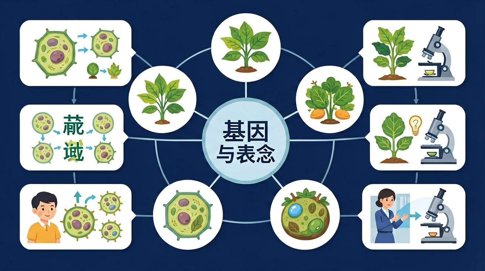
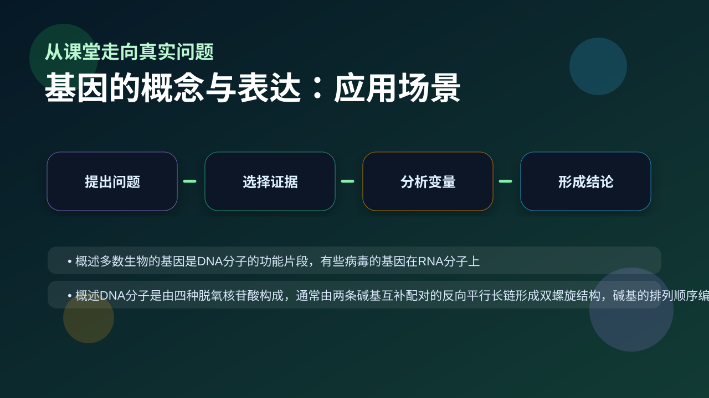

Gallery v1.0.0 · skill v7.14
遗传信息怎样被保存、表达、传递，又怎样影响性状？

已经知道：此前已学习DNA是遗传物质，知道染色体由DNA和蛋白质组成，了解基因控制生物性状（如豌豆高茎基因）的基本案例
但问题是：学生常混淆基因与性状的直接对应关系（如认为'高茎基因=高茎'），难以理解基因如何通过编码蛋白质或RNA间接影响性状表现
所以学：当分析镰刀型贫血症病例时，医生需要从患者异常血红蛋白基因出发，通过表达产物追踪到红细胞形态变化，最终确诊病因
先选一个卡点。后面的例子、互动和 AI 学伴都会围绕它给你最小提示。
选择或输入后，本课会围绕你的问题展开。
下列哪项直接参与蛋白质合成？
现象入口：同一生物不同性状由不同基因影响，但基因不等于性状本身。
机制解释：基因通常是有遗传效应的DNA片段，通过控制蛋白质或RNA影响性状。
证据抓手：证据来自基因定位、突变后表型变化和表达产物检测。
变量线索：基因序列、表达水平、调控区域和环境条件。做题时先找变量，再判断机制，最后写证据。
观察 mRNA 从核孔进入细胞质的过程动画
分解转录中 RNA 聚合酶与 DNA 模板链的碱基配对
阐明 tRNA 反密码子与 mRNA 密码子的互补关系
应用中心法则解释逆转录病毒合成 DNA 的过程
情境：白化病不是“没有黑色素基因”，而是相关酶或表达过程异常导致黑色素合成受影响。
作答路径：白化病现象：患者皮肤缺乏黑色素→机制分析：酪氨酸酶基因转录或翻译异常→证据支持：检测患者皮肤细胞中酪氨酸酶mRNA含量及活性，发现mRNA正常但酶活性缺失，表明翻译后修饰异常。
评分提醒：典型失分点：混淆转录与翻译场所（细胞核/核糖体），未区分密码子（mRNA）与反密码子（tRNA），忽视病毒逆转录的特殊性。
先用 PhET 观察转录和翻译如何把遗传信息转成蛋白质，再回到本课的 Canvas 任务，把“信息流”与 基因的概念与表达 联系起来。
💡 操作提示：拖动调控元件，观察 mRNA 和蛋白质产量变化，思考“表达量变化”和“性状变化”之间的证据链。
一个基因可转录出多条 mRNA，一条 mRNA 可被多个核糖体同时翻译——两级放大让细胞快速合成大量蛋白质。
💡 探究任务：调 mRNA 拷贝数，看蛋白质产量如何被两级放大，解释为什么少量基因就能支撑大量蛋白需求。
把基因、DNA、染色体和性状画等号，是遗传分子基础的核心误区。
只说“增加/减少”不够，要写清改变的是 基因序列、表达水平、调控区域和环境条件 中的哪一个。
没有实验现象、曲线趋势或结构证据，答案就像猜测。
关于转录的正确叙述是？
视频用语音和动态画面回顾本课主线：问题情境 → 机制模型 → 证据判断 → 迁移应用。

解释基因检测和性状预测时，要说明基因如何通过表达影响表型。
提交后会检查你的解释是否包含现象、机制和变量。
如果学生只说出概念名称，继续追问：题干里哪个证据最关键？这个证据对应分子、细胞、个体还是生态系统层级？如果改变 基因序列、表达水平、调控区域和环境条件 中的一个条件，结果会怎样？这三问能把答案从背诵推进到科学解释。
写出转录过程中A-T-C-G对应的RNA碱基
分析白化病患者酪氨酸酶基因正常但表现白化症状的可能原因
设计实验验证某突变导致tRNA反密码子环结构改变对翻译的影响
关于基因表达过程的叙述，正确的是
学习小结：基因通过转录（DNA→RNA）和翻译（RNA→蛋白质）实现表达，需注意转录的模板链选择、RNA聚合酶作用及密码子与反密码子的特异性配对。
先独立作答，再点选项查看对错与错因。
若红绿色盲基因位于X染色体隐性遗传，下列哪项正确？
基因表达过程中，直接决定氨基酸序列的是
下列哪项属于基因突变特点？
基因是具有____效应的DNA片段
答案：遗传
基因通过控制蛋白质合成实现遗传功能
中心法则中，DNA→RNA的过程称为____
答案：转录
以DNA为模板合成RNA
分析正常血红蛋白与异常血红蛋白的基因差异
❓ 为啥基因能决定我的长相，却不能让我长高个儿？
❓ 老师说基因会表达，那它到底是怎么'说话'的？
❓ 转基因食品里的基因也会在我身体里表达吗？
学完这一课，这些问题你都能自信地回答。
✅ 特定细胞只表达特定基因（如胰岛素基因只在胰岛B细胞表达）
💡 混淆基因存在与基因表达
✅ 密码子在mRNA，反密码子在tRNA
💡 空间位置关系记忆错乱
口诀：基因片段藏密码，转录翻译蛋白搭
类比：基因像菜谱，细胞是厨房，表达过程就是按菜谱做菜